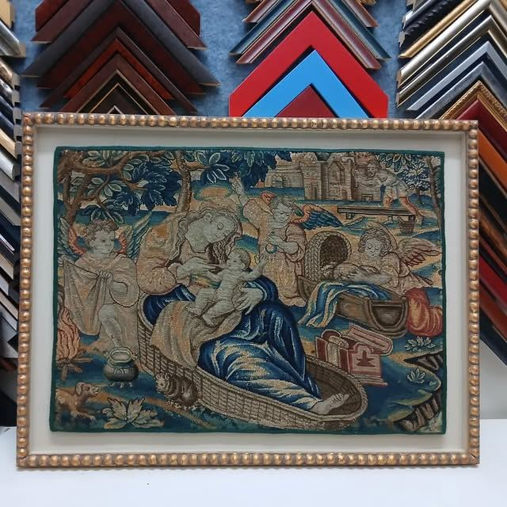
Voor al uw inlijstingen, al ruim 37 jaar
Schilderijen, foto's, borduurwerk of een shirt met handtekening: wij maken de lijst op maat in ons eigen atelier in Etten-Leur. Kies uit ruim 600 soorten lijsten, van modern tot klassiek.
Wat we voor u inlijsten
Bijna alles is mogelijk. Elke lijst maken we op maat, met de beste materialen.
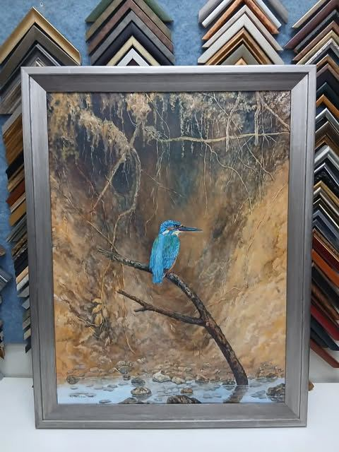
Schilderijen en tekeningen
Van modern tot klassiek, met de lijst die het werk het mooist laat uitkomen.
Voorbeelden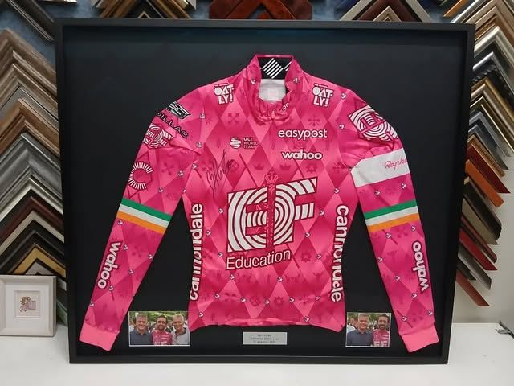
Shirts en herinneringen
Een gesigneerd shirt, schoenen of een dierbaar voorwerp in een diepe lijst.
Voorbeelden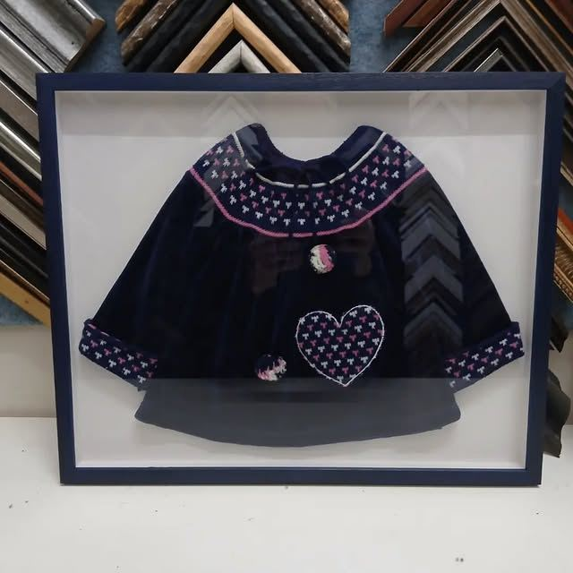
Borduurwerk en textiel
Borduurwerk, een wandkleed of een kledingstuk, netjes opgespannen.
Voorbeelden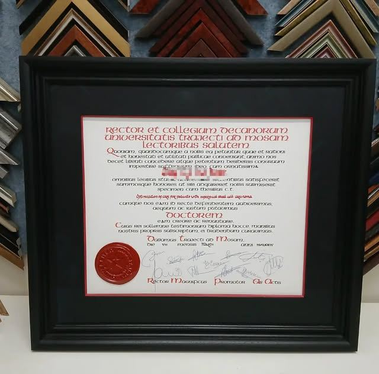
Foto's en oorkondes
Foto's, posters, diploma's en oorkondes, met passe-partout naar keuze.
VoorbeeldenSpiegels op maatFacetspiegels in elke maat, met een lijst naar keuze
Op canvas opspannenFoto's en schilderijen op een spieraam
Ruim 600 lijstenOok lijsten gekleurd naar uw wens
Vier soorten glasHelder, museum-, art- en ontspiegeld glas
Restauratie en opknappen
Naast de lijstenmakerij zijn we ook een restauratie-atelier. Heeft u een oude lijst die er niet meer zo mooi uitziet, of een antieke lijst die hersteld moet worden? Dan kunt u bij ons terecht.
- Oude lijsten opknappenUw vertrouwde lijst weer als nieuw
- Antieke lijsten restaurerenVakkundig hersteld in ons eigen atelier
- Schilderijen schoonmakenZodat de kleuren weer goed uitkomen
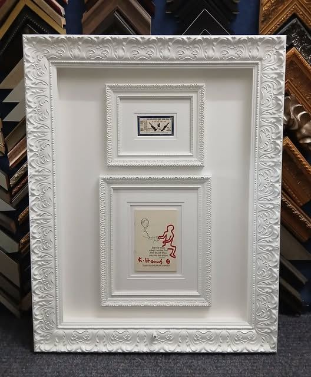
Zo werkt het
We werken op afspraak, 's avonds kan ook.
- Maak een afspraakBel of app ons, of stuur een bericht. Of bel even voordat u langskomt.
- Samen kiezenIn het atelier laten we de mogelijkheden zien: lijst, passe-partout en glas.
- Op maat gemaaktWij maken uw lijst in ons eigen atelier, tegen een gunstige prijs.
Een greep uit ons werk
Van een aquarel met passe-partout tot een raceshirt met helm in een diepe lijst.
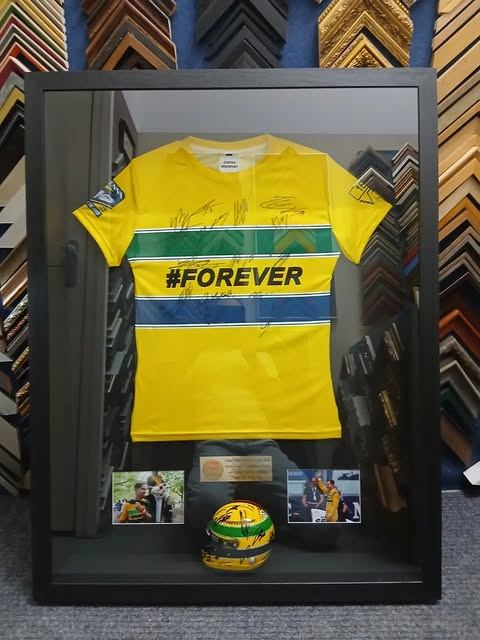
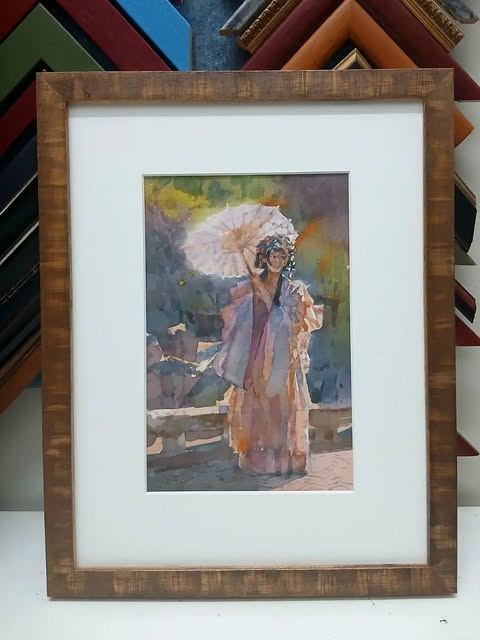
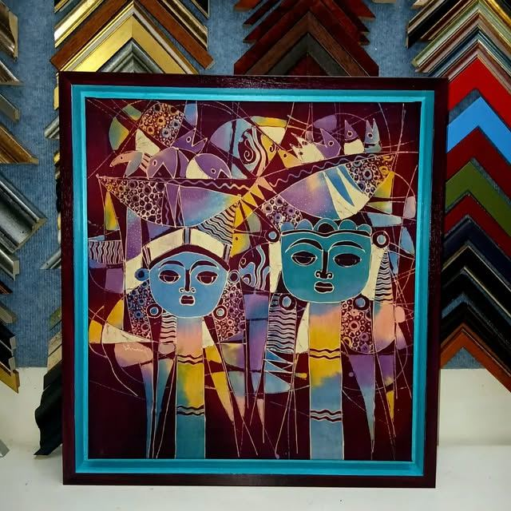
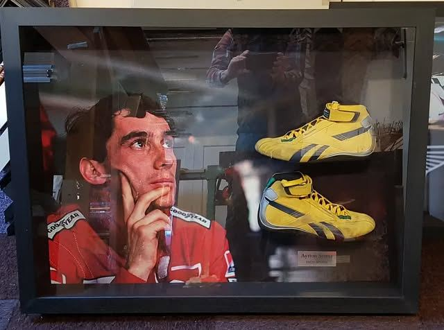
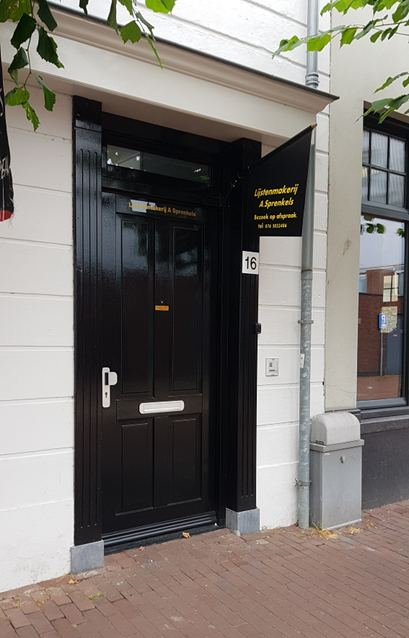
Over Lijstenmakerij A. Sprenkels
Al ruim 37 jaar lijst Adrie Sprenkels van alles in: van een foto of borduurwerk tot een kostbaar schilderij. Alles wordt op maat gemaakt in ons eigen atelier, met de beste materialen.
Sinds 1 september 2022 zitten we aan de Korte Brugstraat 16 in Etten-Leur, naast de kapper. Kom gerust langs, dan laten we de mogelijkheden graag zien.
Afspraak maken
Bel of app ons, of stuur een bericht. We werken op afspraak, ook 's avonds.
Liever even bellen?
Bel of app direct voor een afspraak of een vraag over uw lijst.